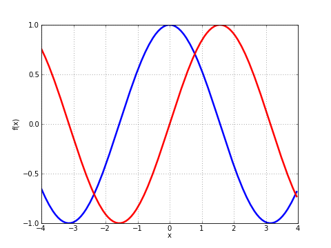

Plotting¶
If matplotlib is available, the functions plot and cplot in mpmath can be used to plot functions respectively as x-y graphs and in the complex plane. Also, splot can be used to produce 3D surface plots.
Function curve plots¶
Output of plot([cos, sin], [-4, 4])
- mpmath.plot(ctx, f, xlim=[-5, 5], ylim=None, points=200, file=None, dpi=None, singularities=[], axes=None)¶
Shows a simple 2D plot of a function \(f(x)\) or list of functions \([f_0(x), f_1(x), \ldots, f_n(x)]\) over a given interval specified by xlim. Some examples:
plot(lambda x: exp(x)*li(x), [1, 4]) plot([cos, sin], [-4, 4]) plot([fresnels, fresnelc], [-4, 4]) plot([sqrt, cbrt], [-4, 4]) plot(lambda t: zeta(0.5+t*j), [-20, 20]) plot([floor, ceil, abs, sign], [-5, 5])
Points where the function raises a numerical exception or returns an infinite value are removed from the graph. Singularities can also be excluded explicitly as follows (useful for removing erroneous vertical lines):
plot(cot, ylim=[-5, 5]) # bad plot(cot, ylim=[-5, 5], singularities=[-pi, 0, pi]) # good
For parts where the function assumes complex values, the real part is plotted with dashes and the imaginary part is plotted with dots.
Note
This function requires matplotlib (pylab).
Complex function plots¶

Output of fp.cplot(fp.gamma, points=100000)
- mpmath.cplot(ctx, f, re=[-5, 5], im=[-5, 5], points=2000, color=None, verbose=False, file=None, dpi=None, axes=None)¶
Plots the given complex-valued function f over a rectangular part of the complex plane specified by the pairs of intervals re and im. For example:
cplot(lambda z: z, [-2, 2], [-10, 10]) cplot(exp) cplot(zeta, [0, 1], [0, 50])
By default, the complex argument (phase) is shown as color (hue) and the magnitude is show as brightness. You can also supply a custom color function (color). This function should take a complex number as input and return an RGB 3-tuple containing floats in the range 0.0-1.0.
To obtain a sharp image, the number of points may need to be increased to 100,000 or thereabout. Since evaluating the function that many times is likely to be slow, the ‘verbose’ option is useful to display progress.
Note
This function requires matplotlib (pylab).
3D surface plots¶

Output of splot for the donut example.
- mpmath.splot(ctx, f, u=[-5, 5], v=[-5, 5], points=100, keep_aspect=True, wireframe=False, file=None, dpi=None, axes=None)¶
Plots the surface defined by \(f\).
If \(f\) returns a single component, then this plots the surface defined by \(z = f(x,y)\) over the rectangular domain with \(x = u\) and \(y = v\).
If \(f\) returns three components, then this plots the parametric surface \(x, y, z = f(u,v)\) over the pairs of intervals \(u\) and \(v\).
For example, to plot a simple function:
>>> from mpmath import * >>> f = lambda x, y: sin(x+y)*cos(y) >>> splot(f, [-pi,pi], [-pi,pi])
Plotting a donut:
>>> r, R = 1, 2.5 >>> f = lambda u, v: [r*cos(u), (R+r*sin(u))*cos(v), (R+r*sin(u))*sin(v)] >>> splot(f, [0, 2*pi], [0, 2*pi])
Note
This function requires matplotlib (pylab) 0.98.5.3 or higher.